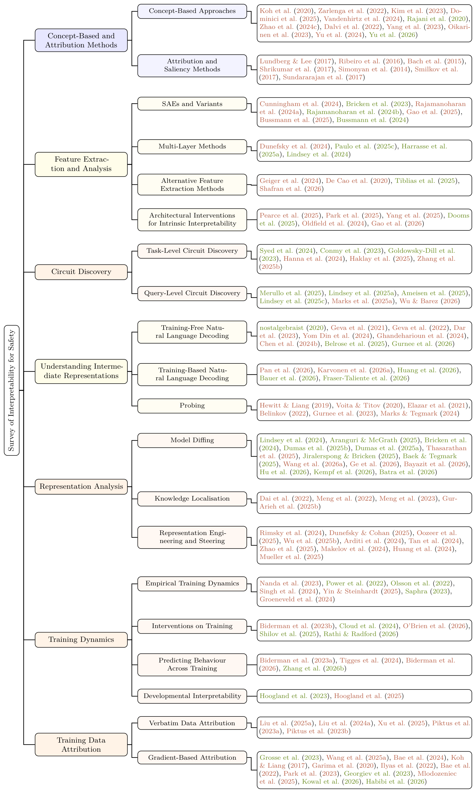

The State of Interpretability for AI Safety: A Survey of Foundations, Methods, and Research Directions
Abstract
We survey interpretability for AI safety, focusing on mechanistic interpretability (MI)—the study of neural networks’ internal representations and computations to develop causal understanding and support targeted interventions. We first situate MI within the broader interpretability landscape, contrasting its mechanism-level evidence with behavioural evaluation while emphasising how behavioural, attributional, and representation-based methods can complement mechanistic analysis. We introduce core foundations for MI from first principles, including features, polysemanticity, superposition, transformer computation, and circuits, and survey methods for feature extraction and analysis, circuit discovery and causal verification, interpreting intermediate representations, training-data attribution, learning dynamics, knowledge localisation, and representation steering. We then characterise six research orientations—Pragmatic, Ambitious, Developmental, Interpretability Across Time, Introspective, and Automated Interpretability—as agendas defined by their goals, assumptions, and trade-offs rather than by exclusive method sets. Finally, we examine how mechanistic understanding can support safety interventions, including knowledge editing, steering, monitoring, and automated interpretability agents, while assessing their limitations, failure modes, open problems, and relationship to behavioural safety measures.
What This Survey Covers
The four pillars that structure the survey, from foundations to safety applications.
Motivation & Concepts
§2–5Fundamental knowledge and core hypotheses.
- Limits of Behavioural Evaluation
- Overview of Interpretability MethodsBehavioural, attribution, concept-based, probing
- Core ConceptsPolysemanticity, features, transformer computation, circuits
- Core HypothesesLinear representation, superposition, privileged access, universality & Platonic representation
Technical Methods
§6–11Approaches developed and used in interpretability research.
- Feature Extraction & Multi-Layer AnalysisSAEs, transcoders, CLTs, crosscoders, DAS, NMF, PCA, ICA
- CircuitsActivation patching, path patching, circuit discovery, unified evaluation framework
- Understanding Intermediate RepresentationsLogit lens, tuned lens, Jacobian lens, Patchscopes, LatentQA, probes
- Training Data AttributionVerbatim TDA, gradient-based TDA
- Learning DynamicsPhase transitions, SLT, emergent abilities, train-time interventions, machine unlearning
- Representation AnalysisModel diffing, knowledge localisation, representation engineering
Research Directions
§12Six research orientations, characterised by their goals, assumptions, and trade-offs.
- Pragmatic InterpretabilityProxy-task-oriented safety interventions
- Ambitious InterpretabilityTowards complete mechanistic understanding
- Developmental InterpretabilityCharacterising how models learn
- Interpretability Across TimeUnderstanding the causes of model behaviours
- Introspective InterpretabilityModels interpreting themselves
- Automated InterpretabilityScaling discovery via automation
Safety & Open Problems
§13–14Deployment-oriented interventions and the critical challenges that remain.
- Safety ApplicationsConcept erasure & knowledge editing, steering vectors & mechanistic monitoring, interpretability agents, risks & failure modes
- Open ProblemsWhen is mechanistic understanding necessary? Evaluation methods, scalability & adversarial robustness, alignment, interpretation vs. truth, proxy fidelity, transferability beyond transformers
Taxonomy

Taxonomy of interpretability methods covered in this survey. Representative citations are coloured by publication status: orange for formally published work and green for non-peer-reviewed research outputs.
BibTeX
The paper link and BibTeX citation will be available with the release.